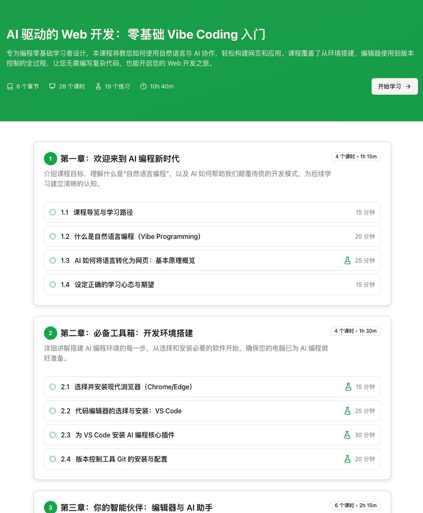
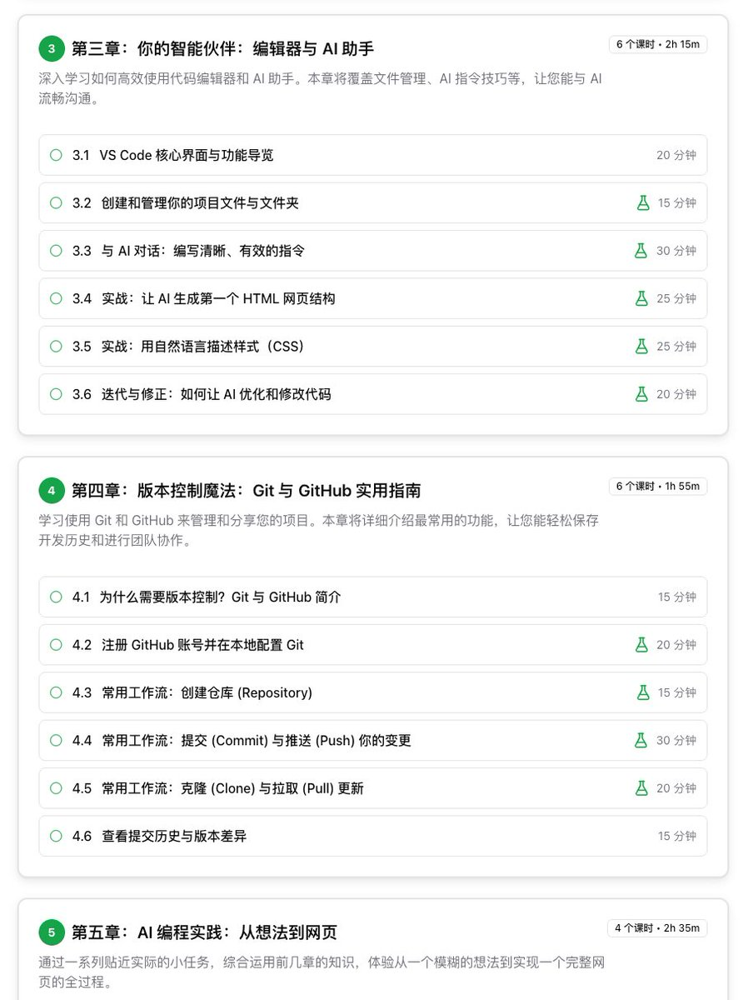
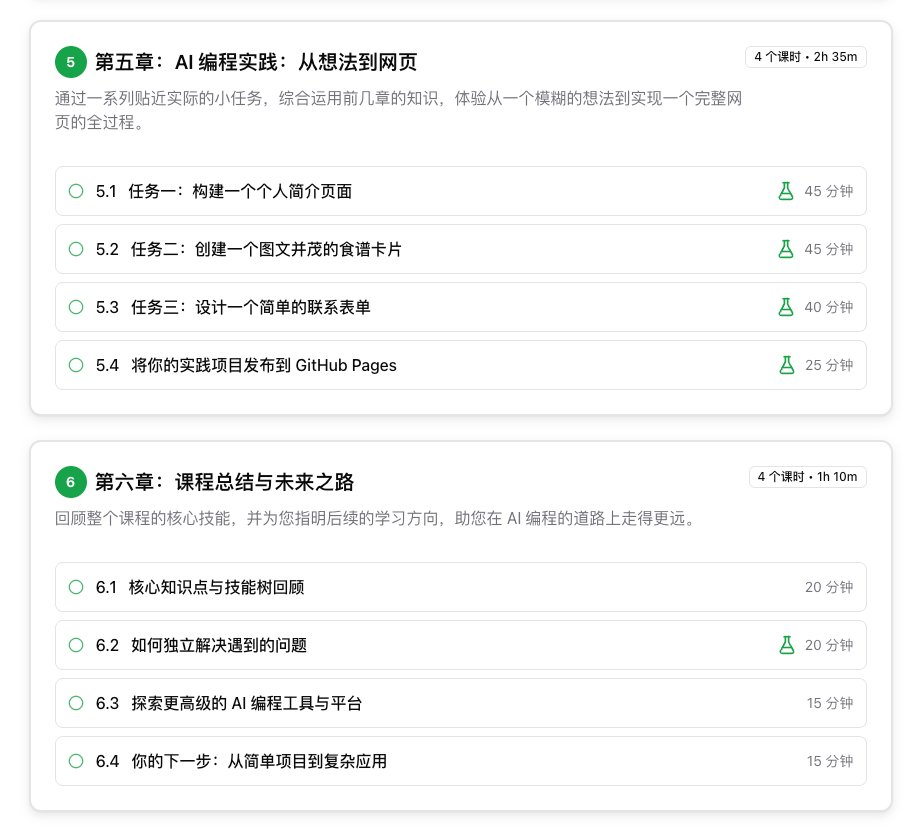

👾Iris-de-lux
@theforeveriris
From his comment area, w can see a truth about "vibe coding discussant". Why is it a person who is clamoring to program a product, can't even use basic tools such as browser, IDE and git, and can't even install the environment?



tangjinzhou
@tangjinzhou
我现在是明白了，AI 编程最大的拦路虎是
环境安装、Git、VS Code…
我专门做了一门「零基础 AI 编程入门课」
教你 1 小时跑通第一个 AI 程序 ⚡️
不需要写一行代码，
从安装 → 运行 → 上传 GitHub → 部署上线，
全流程手把手带你搞定。
📘 免费学习，限前 200 名进微信群
领取方式 👇
❤️ https://t.co/ZfJ8O7I5GZ